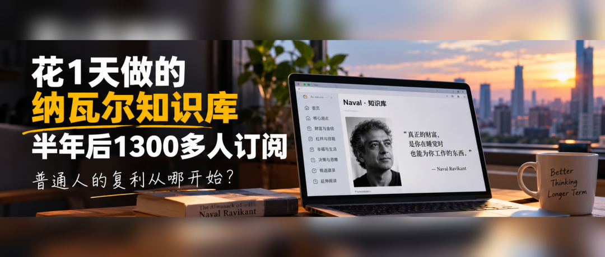
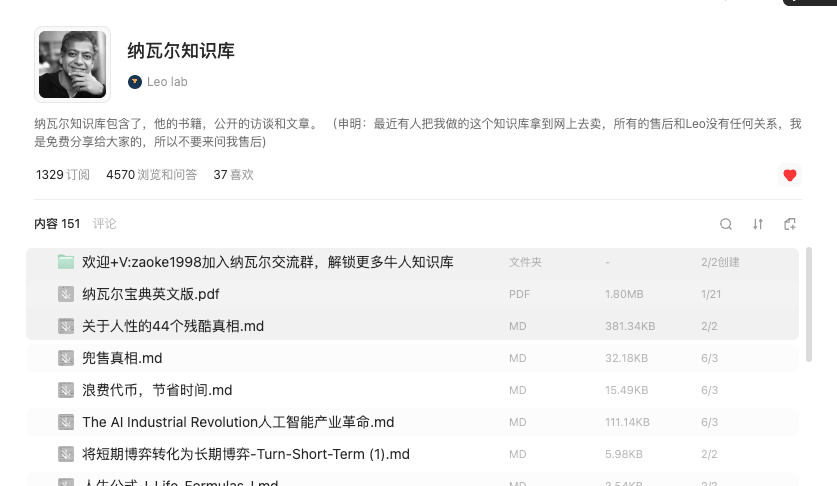

Leo Lab · 文章
花 1 天做的纳瓦尔知识库，半年 1300 多人订阅
我终于理解了什么叫复利

半年前，我花了一天时间，整理了一份纳瓦尔知识库。后来，我把它免费分享了出去。当时也没想那么多，主要是自己喜欢纳瓦尔的思想，觉得他的很多观点值得反复阅读，就想着把这些知识整理起来，方便自己随时查阅。
没想到，半年过去，这份知识库已经有 1300 多人订阅。直到现在，还陆续有人通过知识库里留下的联系方式找到我。
更有意思的是，有一次我发现，居然有人把我免费分享的知识库，拿到闲鱼和多多上去卖了。说实话，看到这件事的时候，我有点气愤。自己免费分享的东西，被别人拿去卖钱，这当然不是我希望看到的。但换个角度想，至少有人觉得它有机会卖出去，说明这件事就是有价值的。
最近，我又重新打开了这份知识库，上传了一些纳瓦尔新的内容，向它提了一个问题。看完回答，依然觉得很有收获。但这一次，让我感触更深的，不只是他的观点，而是我突然意识到：
半年前花掉的那一天时间，居然到今天还在产生价值。
以前读《纳瓦尔宝典》，看到他反复讲复利、杠杆、长期主义，总觉得很有道理。但知道是一回事，真正理解又是另一回事。直到自己做了这么一个小东西，我才开始对这些概念有了更具体的认识。
01、为什么很多人的努力，很难产生复利？
我以前创业 8 年，主要还是围绕互联网、电商和供应链相关的生意。做过生意的人应该都知道，很多时候，你每天都在解决新的问题。比如开发客户、谈合作、对接供应商、处理订单，管理团队。今天忙完了，明天还有新的事情等着你。
赚到了钱，当然值得高兴。但我现在越来越喜欢思考另一个问题：除了赚到的钱，我们的工作还留下了什么？
当然，传统生意也能积累客户、品牌和渠道，这些同样是很有价值的资产。只是有很多工作，本身是一次性的。比如，你今天花了 3 个小时，帮客户解决一个问题。问题解决了，客户很满意。可下次另一个客户遇到同样的问题，你可能还得重新解释一遍。时间就这样被不断消耗掉了。
但如果换一种方式呢？你把解决这个问题的过程整理成一份文档，或者制作成一个可以反复使用的工具。下次再有人遇到类似问题，直接把它分享出去，你就不用每次都从头开始。如果这份资料足够有价值，还可能被更多人看到、收藏，甚至主动传播。
这两种工作方式，短期可能看不出太大区别。但把时间拉长到一年、三年，甚至五年，差距可能就慢慢出现了。
比努力更重要的，是让自己的努力能够留下来点东西。
以前，我们习惯用时间换收入。工作一天，获得一天的报酬。但时间有一个最大的限制，就是每个人每天只有 24 小时。你再努力，也不可能一天工作 100 个小时。想要突破这个限制，就必须想办法让过去的劳动，能够在未来继续创造价值。
02、普通人最容易被忽略的杠杆，其实就在身边
纳瓦尔讲过很多关于财富的观点。其中一个让我印象很深的，就是杠杆。过去，要放大一个人的商业能力，往往需要更多资本、员工或者资源。但互联网改变了这件事。
今天，一个普通人，即使没有团队，也可以通过 AI、写作、代码、视频和数字产品，把自己的知识和能力传播给更多人。而且，互联网有一个很有意思的地方：一份内容被一个人看到，和被一千个人看到，并不意味着你需要付出一千倍的劳动。这就是内容杠杆的价值。
拿我做的纳瓦尔知识库来说。如果没有这个知识库，别人问我纳瓦尔的某个观点，我可能需要重新翻书、查资料，再把答案整理出来。一个人问，我回答一次。十个人问，我可能就要回答十次。可是，现在却不一样了。我把那些值得反复阅读的知识整理到一起，别人可以随时查阅，我也可以随时回来使用。
同样一份内容，不再只能服务于某一个人、某一次交流。更重要的是，它并没有因为我停止整理，就立刻失去价值。半年过去，依然有人发现它；现在已经有超过 1300 人订阅，也有人通过它找到我。

这份知识库让我看到了，一次性的劳动，是有机会变成长期积累的资产的。
很多人一想到赚钱，首先想到的是找一份更高薪的工作，或者多做几个副业。这些逻辑看上去都没错。尤其是在现金流还不稳定的时候，先解决生存问题非常重要。但在此之外，我们是不是也应该拿出一部分时间，去做一些未来还能继续发挥作用的事情？
比如写一篇真正有价值的文章，整理一套自己擅长领域的方法，建立一个知识库，制作一份可以反复使用的工作模板，甚至利用 AI，开发一个帮助别人解决具体问题的小工具。这些东西不一定马上就能赚到钱。但它们和单纯出售时间有一个很大的区别：你的时间花出去了，成果却有机会被保留下来。
03、比 1300 个订阅更重要的，是人与人之间的连接
还有一件事情，让我印象很深。当初分享知识库的时候，我在里面留下了自己的联系方式。一方面方便同样对纳瓦尔感兴趣的人联系我，另一方面也希望以后能围绕复利思维和长期主义，交到一群志同道合的朋友，慢慢建立一个社群。
没想到，半年之后，依然有人通过它找到我。这其实让我挺受启发的。过去做生意，我知道客户有多重要。但现在做内容，我慢慢发现，内容带来的连接，有时候比一次交易更值得长期经营。
因为别人可能只是看了你的一篇文章，就认识了你。也可能因为你免费分享的一份资料，对你产生了最初的兴趣。至于未来会不会继续交流、建立信任，甚至产生合作，那是后面的事情。你无法提前设计好每一种结果。但至少，连接已经发生了。
纳瓦尔一直强调，要和长期主义者玩长期游戏。我觉得这句话放在人际关系上，也很有意思。一个人愿意关注你，可能是因为某篇文章。愿意继续了解你，可能是因为你持续分享的观点。但真正的信任，不会因为一次关注、一次加好友就建立起来。
所以我并不想把知识库的 1300 个订阅者，简单理解成 1300 个潜在客户。这没有意义。我更愿意把它看成一个开始。至少说明，有一些人和我一样，对纳瓦尔的思想、财富认知和个人成长感兴趣。而我刚好做了一件能够把大家连接起来的事情。
最近，还有 50 多位读者留言，说希望加入我的复利社群。这和知识库订阅是两件不同的事，但也让我看到，确实有一部分读者希望围绕复利这个主题，进行更深入的交流。
知道复利的人很多，但真正开始积累自己资产的人，可能并没有那么多。
04、普通人如何开始积累自己的第一份数字资产？
写到这里，可能有人会觉得：Leo，你做过创业，又会写文章，还懂一些 AI 工具，所以你能做知识库。但我只是一个普通上班族，也没什么特别厉害的技能，应该从哪里开始呢？
其实，真的不用想得太复杂。我当初做纳瓦尔知识库的时候，也没有想着要做出一个多么了不起的产品。只是觉得这些内容对自己有帮助，整理起来，顺便分享给别人。回头看，我觉得有三个地方值得借鉴。
第一，先从自己遇到过的问题开始。每个人都有一些别人不知道的经验。比如，你做了几年销售，可能知道怎么跟客户沟通，怎么判断客户需求。你是一个财务人员，可能积累了很多提高工作效率的 Excel 模板。你喜欢读书，可能对某个领域有比较系统的认识。这些东西看起来很普通。但对刚好需要它的人来说，可能就很有价值。你不一定要成为某个领域的专家，才有资格分享自己的经验。有时候，你只需要比别人多走几步，就能帮他少走一些弯路。
第二，把经验变成可以反复使用的东西。这是最重要的一步。如果你只是把知识记在脑子里，它当然有价值。但这种价值很难被更多人使用。你需要想办法把它整理出来。写成文章、制作模板、建立知识库，或者做成一个简单的小工具。现在有了 AI，这件事情的门槛也在降低。当然，AI 还只是工具，可以帮你干活，但还不能替你做决策。资料有没有价值，内容是否准确，最终能不能解决问题，仍然需要人来进行判断。
第三，先分享出去，再慢慢完善。很多人做一件事情，总希望准备得足够完美。知识库还不够完整，文章写得不够好，产品功能还太简单。于是一直修改，一直准备，就是不愿意发布。但问题是，你不分享出去，怎么知道别人到底需不需要？我的纳瓦尔知识库，也不是因为一开始就计划好了 1300 个订阅，才决定制作的。恰恰相反，我先把它做了出来，分享出去，然后才慢慢看到了后面的结果。
先用最小的成本，做出第一个真正有价值的东西。剩下的，交给实践和时间去检验。
05、我们真正应该积累的，不只是钱
以前，我对复利的理解，主要来自投资。比如长期持有优质资产，让收益继续产生收益。这当然是复利最直观的体现。但最近这段时间，我越来越觉得，复利不应该只发生在投资账户里。
知识可以积累。技能可以积累。作品可以积累。人与人之间的信任，同样可以积累。而且这些积累，有时候还会互相影响。你因为阅读，提升了认知。因为认知的改变，开始学习一项新技能。然后通过实践，把技能变成作品。作品被更多人看到，又为你带来了新的机会。如果未来能够通过这些能力获得收入，再把一部分收入用于长期投资，就有机会形成一个属于自己的正向循环。
当然，这个过程不会自动发生，你需要解决很多问题之后，这个飞轮才会运转起来。不是说你今天写一篇文章，明天就会有人关注。更不是做一个知识库，半年之后就一定能赚到钱。
积累不等于复利，但没有积累，复利就无从谈起。
真正重要的是，我们能不能持续做一些有价值的事情，让过去的努力，成为下一次进步的基础。就像我半年前做的这份纳瓦尔知识库。它现在还算不上什么成功的商业项目，也没有给我带来所谓的被动收入。但它至少让我验证了一件事情：花出去的时间，不一定会随着时间一起消失。只要创造出来的东西依然有价值，就有机会在未来继续发挥作用。
这对我来说，已经是一个很好的开始。接下来，我也准备继续研究和实践这件事。一边阅读、写作，提升自己的认知；一边学习 AI，尝试把自己的知识和经验变成可以反复使用的工具与数字产品；同时，通过投资，让自己辛苦赚来的钱有机会实现长期增长。这也是我想持续写「Leo 的复利之路」的原因。
过去，我们总想着如何通过努力赚更多钱。但未来，我更想学会的是，如何让自己的每一次努力，都尽可能变成一份可以积累的资产。
如果你也想开始积累自己的数字资产，不妨想一想：过去这些年，你有哪些经验、知识或者技能，是别人经常向你请教的？有没有可能，把其中一件事整理出来，做成属于自己的第一份数字资产？
我是 Leo，持续分享认知、AI、商业与投资，探索普通人的长期复利之路。